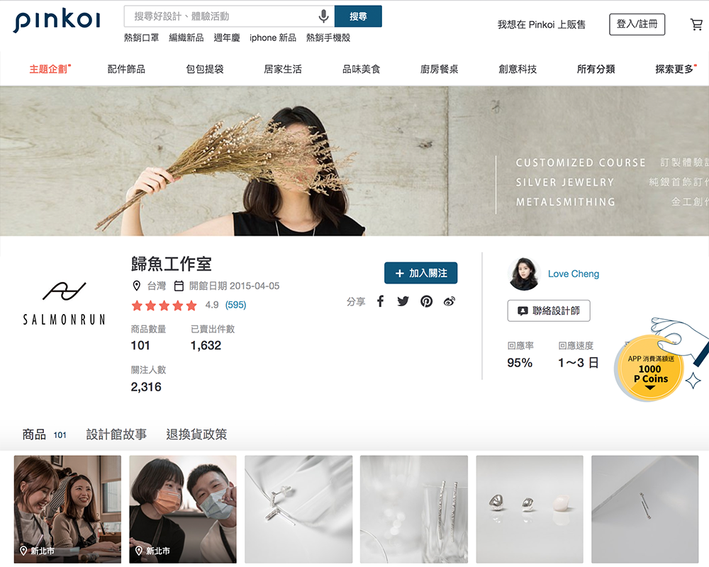
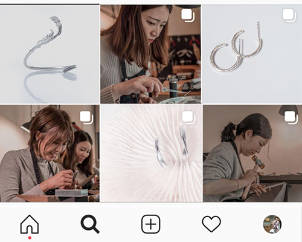
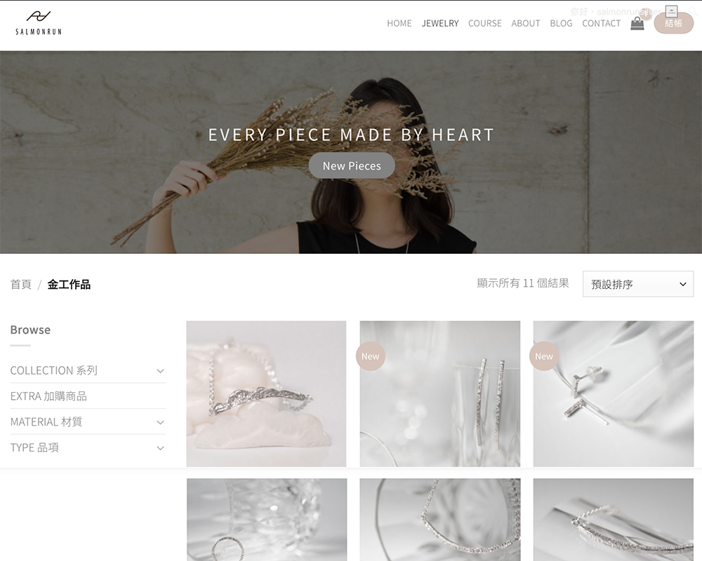
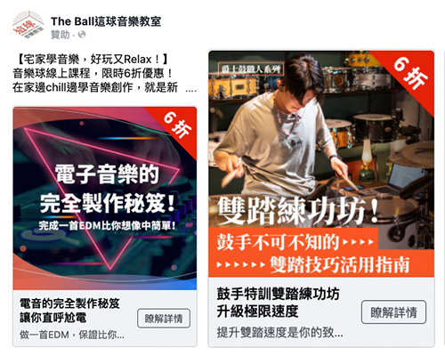
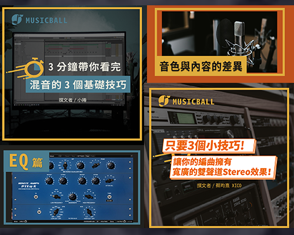
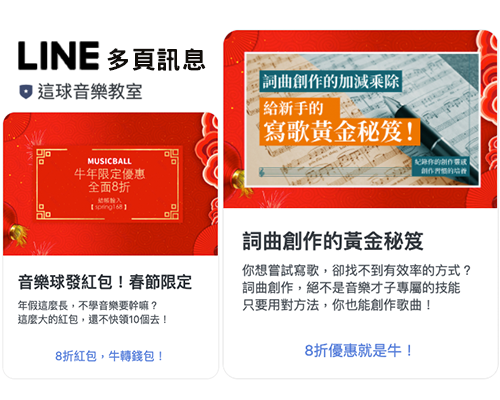
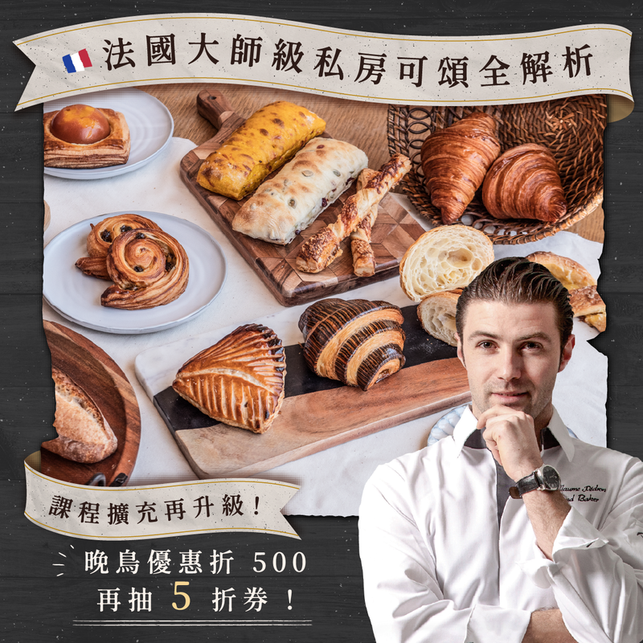

整合線上線下行銷
導入 POS 系統，透過後台管理做銷售分析，建立合適的 O2O 銷售渠道，尋找網紅行銷置入與異業合作的機會。
整合社群、廣告、網站與影音內容，從策略規劃到實際執行，讓品牌找到更合適的溝通方式。

導入 POS 系統，透過後台管理做銷售分析，建立合適的 O2O 銷售渠道，尋找網紅行銷置入與異業合作的機會。

重新塑造社群視覺、優化商業檔案與擬定貼文策略，藉由 Hashtag 與熱門話題提升貼文觸及率。

使用 WordPress 架設網站，串接綠界提供多樣化金物流，加入會員系統並針對不同介面進行響應式設計。

企劃文宣與影片素材，投放 Google、Facebook、LINE LAP 等廣告平台，並持續優化素材與廣告操作。

規劃一系列知識圖文與影音內容，提供音樂愛好者實用資訊，以達到品牌宣傳目的。

整合實體教室行銷資源，策劃節慶與不定期活動，並在社群、電子郵件與 LINE 上推播。
針對日檢考試規劃日文課程優惠活動，架設發燒網並投放 Google 關鍵字與 Facebook 廣告，提升十倍以上銷量。

規劃課程晚鳥優惠活動，投放 Facebook 廣告，並在聯盟網與相關社群推播，有效提升課程銷售量。
規劃《Kuma 桑在台灣》YouTube 內容，推出全聯蛋糕開箱影片並進行影音 SEO 優化，有效提升觀看率。